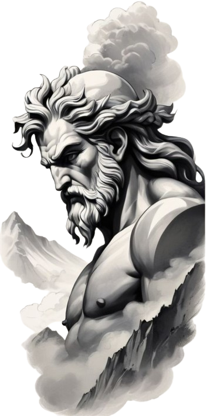
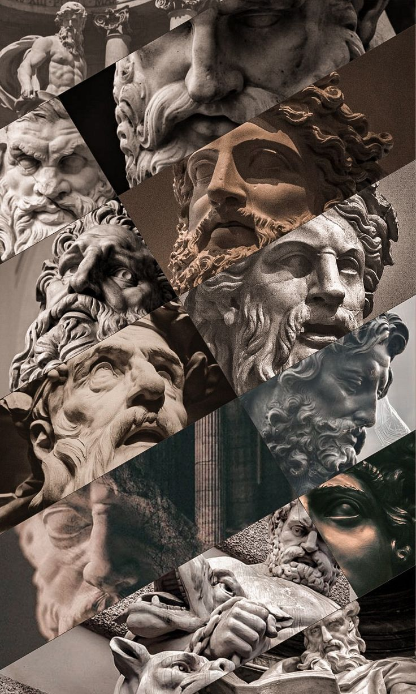

La mitología griega es uno de los sistemas de creencias y narrativas más ricos y complejos de la antigüedad clásica. Este conjunto de mitos y leyendas estaba profundamente arraigado en la cultura y la sociedad de la antigua Grecia, y ha tenido una influencia duradera en el arte, la literatura, la filosofía y la religión occidentales.
Aquí hay algunos aspectos destacados de la mitología griega:
Dioses y Diosas: La mitología griega cuenta con una vasta panoplia de dioses y diosas que gobernaban diferentes aspectos del mundo natural y humano. Entre los más conocidos se encuentran Zeus, el rey de los dioses; Hera, su esposa y reina del Olimpo; Atenea, la diosa de la sabiduría y la guerra justa; Apolo, el dios del sol y la música; Afrodita, la diosa del amor y la belleza, entre muchos otros.
Los Mitos de la Creación y el Origen del Mundo: La mitología griega presenta varias historias sobre la creación del mundo y el origen de los dioses y los seres humanos. Entre ellas se encuentran las historias de los Titanes, los Gigantes y los primeros dioses olímpicos que emergieron del Caos primordial.

Los Héroes y sus Hazañas: La mitología griega está llena de héroes legendarios que realizaban hazañas extraordinarias y enfrentaban desafíos sobrenaturales. Algunos de los héroes más conocidos incluyen a Heracles (Hércules), Perseo, Teseo y Odiseo.
Los Ciclos de Mitos: Los mitos griegos están organizados en varios ciclos temáticos que se entrelazan entre sí. Estos incluyen el ciclo tebano, que se centra en la ciudad de Tebas y sus personajes, como Edipo y Antígona; el ciclo troyano, que narra los eventos de la Guerra de Troya y sus consecuencias; y el ciclo olímpico, que se centra en las historias de los dioses y diosas del Olimpo.
Rituales y Culto: La religión griega involucraba una variedad de rituales y ceremonias dedicadas a honrar a los dioses y buscar su favor. Estos rituales incluían festivales públicos, sacrificios de animales, procesiones religiosas y competiciones deportivas.
La mitología griega ha sido una fuente inagotable de inspiración para artistas, escritores, filósofos y pensadores a lo largo de los siglos, y sigue siendo una parte importante del patrimonio cultural de la humanidad.